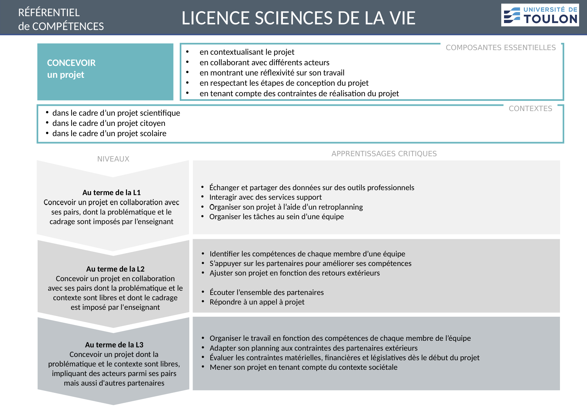
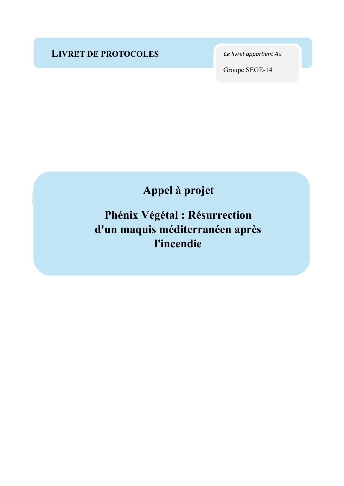
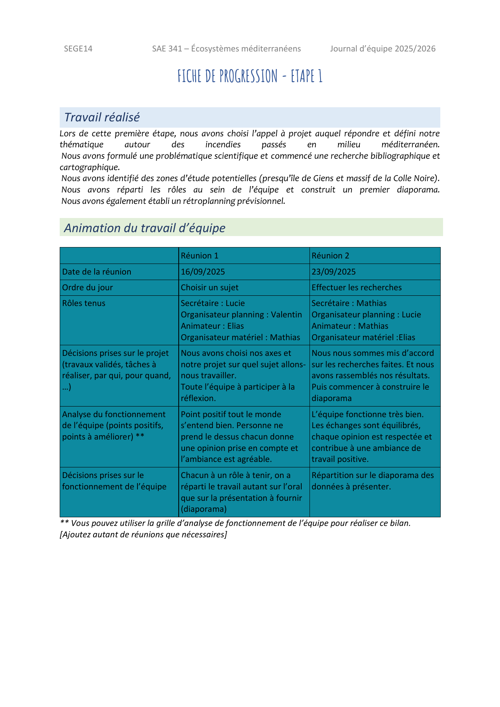
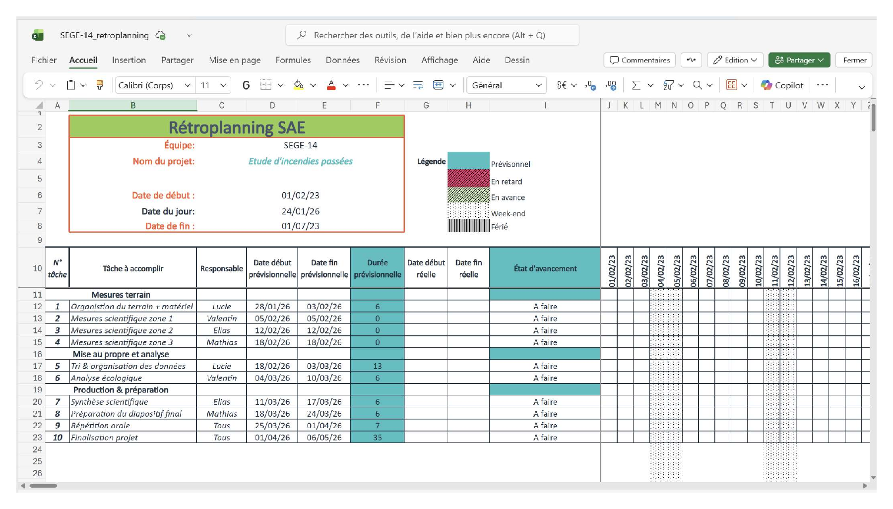
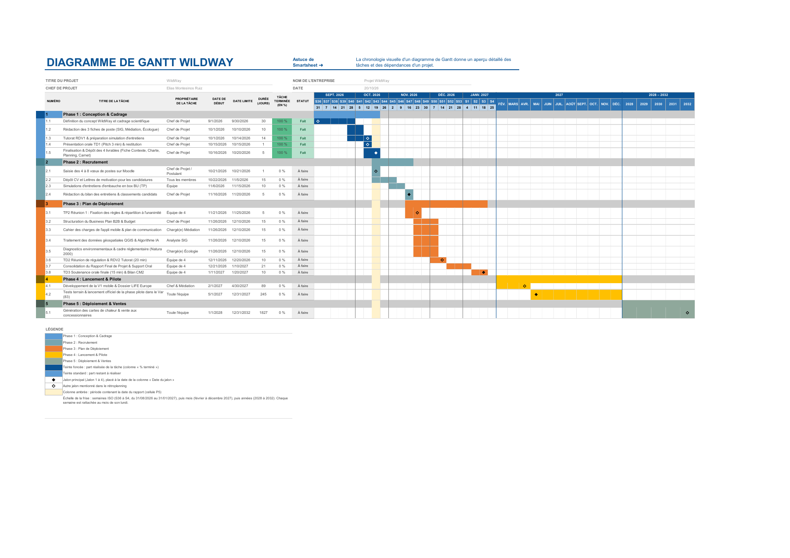
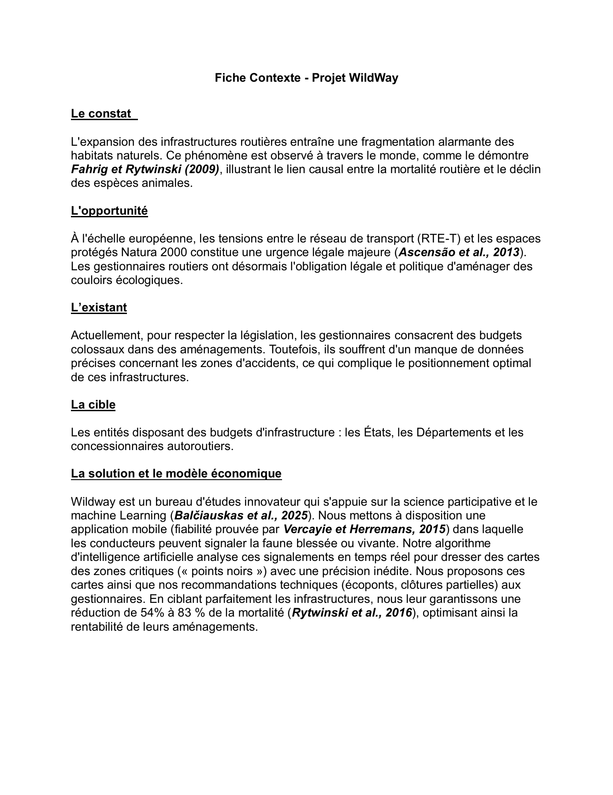

Savoirs
Comprendre le contexte écologique, les acteurs et les contraintes d’un projet.
Compétence · Repères de formation
Organiser un projet dans son contexte, collaborer avec les acteurs concernés et ajuster sa démarche aux contraintes et aux retours.
Université de Toulon · Licence Sciences de la Vie
Ces repères décrivent les attendus de la formation. Ils ne constituent pas une validation de mes acquis. Les extraits du dossier indiquent ce qui est effectivement documenté.

Agrandir le référentielL1 → L3 · projets et contribution
La SAÉ23 apparaît dans ma Markmap, mais le carnet retrouvé est surtout un modèle vide. Je la garde comme repère de L1 sans la présenter comme preuve. Les traces les plus utiles commencent avec Phénix Végétal en L2 et se prolongent avec WildWay en L3.
Composante · Contextualiser
Avec l’équipe SEGE14, nous avons choisi la question du maquis méditerranéen après incendie, recherché des zones d’étude et formulé une problématique. Mon carnet personnel m’attribue une participation à cette question, à la bibliographie et à la présentation ; les documents du groupe restent collectifs.

Agrandir l’extraitRéponse à l’appel à projet — Ce document fixe le cadre et les méthodes envisagées, avant les résultats.
Lire les pages sélectionnéesComposantes · Collaborer et répartir
Le journal d’équipe nomme les rôles des réunions et m’indique comme animateur à une étape, puis relecteur des diapositives. La remarque « trop de textes » m’a conduit à discuter la clarté du support avec le groupe.

Agrandir l’extraitElias : animateur / relecteur — La ligne de relecture attribue un avis précis ; le journal n’est pas un travail individuel.
Lire les pages sélectionnéesComposantes · Étapes et contraintes
Le rétroplanning Phénix répartit les étapes. Mon bilan personnel reconnaît une difficulté d’anticipation. En L3, le planning WildWay détaille davantage les phases, mais ce document collectif ne démontre pas encore quelle partie j’ai planifiée seul.

Agrandir l’extraitÉchéances du projet — Une organisation prévue par l’équipe.
Lire les pages sélectionnées
Agrandir l’extraitPhases de conception et recrutement — Comparer les phases ; ma contribution précise au document reste à établir.
Lire les pages sélectionnéesComposantes · Acteurs et recul personnel
La fiche contexte et la charte cadrent un projet sur les signalements de faune près des routes. Mon classement personnel des entretiens montre comment j’ai comparé les missions à mon intérêt pour la faune sauvage. Les affirmations de la charte sur l’algorithme relèvent du projet envisagé : elles ne prouvent pas une application déjà réalisée.

Agrandir l’extraitFragmentation des habitats et données routières — Le problème et les destinataires sont identifiés.
Lire les pages sélectionnées Agrandir l’extrait
Agrandir l’extrait↗ Mes critères de choix évoluent après les entretiens : c’est une trace personnelle de ma réflexion.
Lire la pageComprendre le contexte écologique, les acteurs et les contraintes d’un projet.
Participer à une problématique, relire une présentation et lire un rétroplanning.
Écouter l’équipe, reconnaître les difficultés d’anticipation et ajuster mes choix.
Le projet lié à la faune et aux relations avec les acteurs me parle particulièrement. Je veux mieux documenter ma part exacte dans les livrables collectifs de L3.